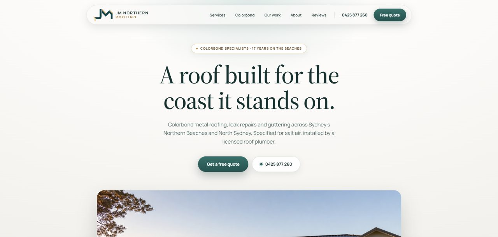

Roofing website design in Auckland: villas, long-run iron and a very wet few years
Auckland roofers have had a busy few years, from the 2023 floods to Cyclone Gabrielle. Homeowners now search more carefully, and many use the website to decide who to call.

An Auckland roofing website should show your villa and bungalow work if you do it, cover leaks and storm damage in plain language, list the areas you serve across the isthmus and the Shore, and display your LBP licence. Since the 2023 floods, many homeowners check these things before they call.
January 2023 changed how a lot of Aucklanders think about their roofs. The Anniversary weekend floods were followed a couple of weeks later by Cyclone Gabrielle, and roofers across the region had a heavy workload afterwards. Some homeowners found out how hard it can be to find a good roofer quickly.
Since then, people research more before they call. They look at photos, check credentials and read reviews. Your website is often where that starts.
01Which Auckland roofs should your website talk about?
Auckland's older suburbs are full of timber villas and bungalows with corrugated iron roofs. Ponsonby, Grey Lynn, Mt Eden, Devonport and Onehunga all have streets of them. Reroofing a villa is detailed work: matching the corrugated profile, getting the flashings right around chimneys and turrets, and handling the bullnose verandah roof. Owners care about how it looks as much as whether it leaks.
If you do this work, it deserves its own page with your own before-and-after photos. Explain your approach in plain language and mention special character areas if you deal with them.
Newer suburbs have different roofs: long-run Colorsteel on homes in Flat Bush, Hobsonville and Millwater, concrete tile on many 1970s to 1990s homes, and membrane roofs on some of the monolithic homes built around the turn of the century. Each needs a different page and a different set of photos.
02How should the site handle leak calls?
Auckland is humid and wet, and leaks are a common reason people search for a roofer. Those searches often come during or just after heavy rain, on a phone. Build for that visitor:
- A call button in the header that stays visible as they scroll.
- A leak repair page written the way people describe the problem: water through the ceiling, overflowing spouting, damp in the roof space.
- A storm damage page explaining make-safe work and what to photograph for an insurer.
- A short form with photo upload, so they can show you the problem.
03Area pages for a big, spread-out city
Auckland is large, and traffic makes travel time a real question. Homeowners want to know you work their side of the harbour. Group your areas the way locals do:
- Central isthmus: Ponsonby, Grey Lynn, Mt Eden, Epsom, Remuera.
- North Shore: Takapuna, Devonport, Albany, Browns Bay.
- West: Henderson, Titirangi, Te Atatū, Hobsonville.
- East: Howick, Pakuranga, Botany, Flat Bush.
- South: Manukau, Papatoetoe, Papakura, Pukekohe.
Each page should show work you have done there. If you have never had a job in Pukekohe, leave it out.

04Credentials Auckland homeowners look for
Some roofing work in New Zealand counts as restricted building work, which has to be done or supervised by a Licensed Building Practitioner with the right licence class. More homeowners are learning to ask. Put your LBP details somewhere easy to find, along with your insurance and any manufacturer accreditations.
05Common problems on Auckland roofing sites
- No LBP details, or details buried on a page nobody visits.
- Photos from overseas jobs or stock libraries. Auckland villas are easy to recognise.
- Australian terms like "gutters" used throughout, when your customers search for "spouting". Use both.
- Slow image galleries on mobile.
- Contact forms with no confirmation of when you will reply.
06Common questions
Should my site show my LBP licence?
Yes. Homeowners increasingly check it, and showing it clearly saves them a step. Include the licence class and your LBP number. Place it in the footer and on the contact page, so it is there whichever page a visitor lands on.
Do I need pages for every Auckland suburb?
No. Five or so area pages with real local jobs are easier to keep up and more convincing than dozens of thin suburb pages. Start with the areas you work most, and add others only when you have a job to show there.
Should I use 'spouting' or 'gutters' on my site?
Both. Most New Zealanders say spouting, but some search for gutters, especially newer arrivals. Use spouting in headings and mention gutters once or twice in the text. That way a search for either word lands on a page that matches it.
Is a membrane roof page worth having?
If you do that work, yes. Owners of flat-roofed and monolithic homes from around 2000 often search for membrane repairs by name, and a general page will miss them. Describe the repair steps and the materials you use, so the page answers the question directly.
How quickly should I reply to website enquiries?
Within one working day, and sooner for leaks. Say on the form when people can expect a reply, then stick to it. If a busy spell means a slower reply, update the form message so the promise stays true.
If you run a roofing business in Auckland and your site is not bringing in the right jobs, send a short brief. For a windier version of the same problem, see the Wellington guide.